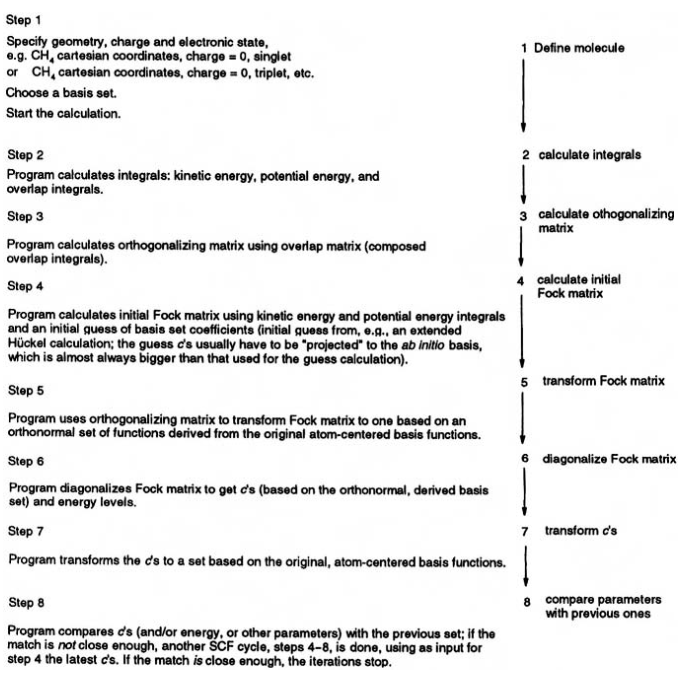

import numpy as np
from numpy import*
import scipy
from numpy.linalg import inv2 Método de Hartree-Fock
Las ecuaciones de Hartree-Fock son ecuaciones no lineares que pueden ser resueltas con los métodos numéricos apropiados. Sin embargo, en 1951, C.C.J. Roothan demostró que utilizando el método de LCAO, las ecuaciones de Fock se simplifican reformulándose como matrices [1][2].
En este ejemplo, se resolverá la ecuación de Roothan \(\textbf{F}\textbf{C}=\textbf{S}\textbf{C}\pmb{\epsilon}\) para el ión de hidruro de helio (\(HeH^{+}\)) siguiendo el algoritmo esquematizado en la siguiente figura[3]:

2.0.1 Definir sistema de estudio y base
El presente proyecto se realizó bajo el sistema de referencia:
dHHe= 1.5117 #a.u.
rR1 = 0 #Distancia del origen a núcleo H
rR2 = 1.5117 #Distancia del origen a núcleo He
ZH= 1
ZHe=2
dim = 2 #Número de átomos en moléculaUtilizaremos como funciones base combinaciones lineares de funciones Gaussianas (STO-1G, específicamente). Esto facilita la evaluación de las integrales correspondientes y hará posible utilizar directamente las expresiones ya calculadas en [4].
Las funciones base propuestas son funciones Gaussianas contraídas (CGF, por sus siglas en inglés) y tinene la forma:
\(\phi^{CGF}_{1s}= \sum^3_{p=1} d_p \phi^{GF}_{1s}(\alpha_p, \textbf{r}-\textbf{R}_A )\)
donde \(\phi^{GF}_{1s}(\alpha_p, \textbf{r}-\textbf{R}_A ) = \left( \frac{2 \alpha}{\pi} \right)^{3/4} \mathrm{e}^{-\alpha_p|\textbf{r}-\textbf{R}_A|^2}\)
Generaremos el diccionario \(BasisDat\) para recopilar los datos de los coeficientes de contracción (\(d_p\)) y exponenciales (\(\alpha_p\)) de cada átomo (\(A\)) de la molécula [3]. Este diccionario puede expandirse incluyendo los datos de otras bases[5].
BasisDat= {'H': {'STO-1G':{'exp':0.4166,
'coef':0.3996}},
'He': {'STO-1G':{'exp':0.7739,
'coef':0.5881}}}
dH= BasisDat['H']['STO-1G']['coef']
αH=BasisDat['H']['STO-1G']['exp']
dHe =BasisDat['He']['STO-1G']['coef']
αHe = BasisDat['He']['STO-1G']['exp']
alphas =[αH,αHe]
ds= [dH,dHe]2.0.2 Definir integrales
2.0.2.1 Integrales de traslape \(S_{\mu \nu}\)
La integral de traslape para el orbital 1s de H (\(\mu\)) y el orbital 1s de He (\(\nu\)) está definida como:
$_{} = ^{CGF *}{} ^{CGF}{} $
Siendo cada elemento \(S_{\mu\nu}\) el ya calculado en la ecuación (A9) de [4]:
\(S_{pq} = \left( \frac{\pi}{\alpha_{p \mu} + \alpha_{q \nu}} \right)^{3/2} \mathrm{exp}[ -\frac{\alpha_{p \mu} \alpha_{q \nu}}{\alpha_{p \mu}+ \alpha_{q \nu}} |\textbf{R}_A-\textbf{R}_B|^2]\)
S = zeros((dim,dim))
for p in arange(0,dim):
for q in arange(0,dim):
mu = alphas[p]
nu = alphas[q]
N=(4*mu*nu/(pi**2))**0.75
if p==q:
S[p,q] = (pi/(mu+nu))**(1.5)*N*exp(-1*((mu*nu)/(mu+nu))*(rR1)**2)
else:
S[p,q]=(pi/(mu+nu))**(1.5)*N*exp(-1*((mu*nu)/(mu+nu))*(rR2)**2)
#print(mu,nu,N)
print(S)[[1. 0.50173931]
[0.50173931 1. ]]2.0.2.2 Definir \(\hat{H}^{core}_{\mu \nu}\)
El \(\hat{H}^{core}_{\mu \nu}\) puede definirse como:
\(\hat{H}^{core}_{\mu \nu} = \textbf{T}_{\mu \nu} + \textbf{V}^{nucH}_{\mu \nu} + \textbf{V}^{nucHe}_{\mu \nu}\)
donde \(\textbf{T}_{\mu \nu}\) es la matriz de la energía cinética de un electrón y \(\textbf{V}^{nucC}_{\mu \nu}\) es la matriz correspondiente al potencial de atracción entre un electrón y el núcleo \(C\). Cada término es calculado de manera similar a \(\mathbf{S}_{\mu \nu}\), siendo los correspondientes términos \(T_{pq}\), \(V^H_{pq}\) y \(V^{He}_{pq}\) aquellos calculados en (A11) y (A33) en [4].
2.0.2.2.1 Integral de energía cinética de un electrón \(T_{\mu \nu}\)
T = zeros((dim,dim))
for p in arange(0,dim):
for q in arange(0,dim):
mu = alphas[p]
nu = alphas[q]
N=(4*mu*nu/(pi**2))**0.75
if p==q:
T[p,q]=N*mu*nu/(mu+nu)*(3.0-2.0*mu*nu*(rR1*rR2)/(mu+nu))*(pi/(mu+nu))**(3/2)*exp(-mu*nu*(rR1*rR2)/(mu+nu))
else:
T[p,q]=N*mu*nu/(mu+nu)*(3.0-2.0*mu*nu*(rR2*rR2)/(mu+nu))*(pi/(mu+nu))**(3/2)*exp(-mu*nu*(rR2*rR2)/(mu+nu))
print(T)[[0.6249 0.23945188]
[0.23945188 1.16085 ]]2.0.2.2.2 Integrales de energía potencial de un electrón y un núcleo \(V^{nuc}_{\mu \nu}\)
###Definición de funciones F_0 y Rp como se realiza en [6]
def F0(t):
"""
Función F para orbital 1s
"""
if (t<1e-6):
return 1.0-t/3.0
else:
return 0.5*(pi/t)**0.5*erf(t**0.5)
def erf(t):
"""
Aproximación para la función de error
"""
P = 0.3275911
A = [0.254829592,-0.284496736,1.421413741,-1.453152027,1.061405429]
T = 1.0/(1+P*t)
Tn=T
Poly = A[0]*Tn
for i in range(1,5):
Tn=Tn*T
Poly=Poly*A[i]*Tn
return 1.0-Poly*exp(-t*t)VH = zeros((dim,dim))
VHe = zeros((dim,dim))
for p in arange(0,dim):
for q in arange(0,dim):
mu = alphas[p]
nu = alphas[q]
N=(4*mu*nu/(pi**2))**0.75
if p==q:
RpH= rR1
RpHe= rR2
VH[p,q] = -ZH*N*2*pi/(mu+nu)*F0((mu+nu)*((RpH-rR1)**2))*exp(-mu*nu*(rR1**2)/(mu+nu))
VHe[p,q]= -ZHe*N*2*pi/(mu+nu)*F0((mu+nu)*((RpHe-rR2)**2))*exp(-mu*nu*(rR1**2)/(mu+nu))
else:
Rp=(rR1*αH+rR2*αHe)/(αH+αHe)
VH[p,q] = -ZH*N*2*pi/(mu+nu)*F0((mu+nu)*((Rp-rR1)**2))*exp(-mu*nu*(rR2**2)/(mu+nu))
VHe[p,q]= -ZHe*N*2*pi/(mu+nu)*F0((mu+nu)*((Rp-rR2)**2))*exp(-mu*nu*(rR2**2)/(mu+nu))
print(VH)
print(VHe)[[-1.02998213 -0.51029092]
[-0.51029092 -1.40382341]]
[[-2.05996426 -1.88085068]
[-1.88085068 -2.80764682]]Hcore = T + VH + VHe
print(Hcore)[[-2.46504639 -2.15168972]
[-2.15168972 -3.05062023]]2.0.2.3 Integrales de 2 electrones \(V^{ee}_{\mu \nu \sigma \lambda}\)
#Integrales de dos electrones reportadas en [3]
Vee = zeros((dim,dim,dim,dim))
Vee[0][0][0][0]= 0.7283 #A
Vee[1][0][0][0]= Vee[0][1][0][0]= Vee[0][0][1][0]= Vee[0][0][0][1]= 0.3418 #B
Vee[1][1][0][0]= Vee[0][0][1][1]= 0.5850 #C
Vee[1][0][1][0]= Vee[0][1][0][1]= 0.2192 #D
Vee[1][1][1][0]= Vee[0][1][1][1]= Vee[1][0][1][1]= Vee[1][1][0][1]= 0.4368 #E
Vee[1][1][1][1]= 0.9927 #FYa que \(S_{\mu\nu}\) es hermítica, esta puede diagonalizarse. Esto permitirá resolve la ecuación de Roothan dejando fuera la matriz de traslape.
\(\textbf{F}\textbf{C}=\textbf{S}\textbf{C}\pmb{\epsilon} \rightarrow \textbf{F}'\textbf{C}'=\textbf{C}'\pmb{\epsilon}\)
donde \(\textbf{F}' = \textbf{X}^{\dagger}\textbf{F}\textbf{X}\) y \(\textbf{X}=\textbf{S}^{1/2}\)
#Obtención de la matriz X
eigvalS,U = linalg.eig(S)
diagS = dot(U.T,dot(S,U))
diagsqrtS = diag(diagonal(diagS)**(-1/2))
X = dot(U,dot(diagsqrtS,U.T))2.0.3 Calcular matriz de Fock \(\textbf{F}\)
#Proponer C_i para construcción de P
#Construir la matriz de densidad P a partir de C
C0 = [0,0]
P0 = zeros((dim,dim))
for p in arange(0,dim):
for q in arange(0,dim):
P0[p,q] = 2*C0[p]*C0[q]
print(C0)
print(P0)[0, 0]
[[0. 0.]
[0. 0.]]#Calcular G0
G011=[]; G022=[]; G012=[]
for n in arange(0,dim):
for m in arange(0,dim):
g11 = P0[n][m]*(Vee[0][0][n][m]-0.5*Vee[0][m][n][0])
g22 = P0[n][m]*(Vee[1][1][n][m]-0.5*Vee[1][m][n][1])
g12 = P0[n][m]*(Vee[0][1][n][m]-0.5*Vee[0][m][n][1])
G011.append(g11)
G022.append(g22)
G012.append(g12)
G021 = G012
G0 = [[sum(G011),sum(G012)],[sum(G021),sum(G022)]]
G0[[0.0, 0.0], [0.0, 0.0]]F0 = Hcore + G02.0.4 Transformar \(\textbf{F}\) a matriz \(\textbf{F}'\)
F0p = X*F0*X2.0.5 Diagonalizar matriz \(\textbf{F}'\) para obtener \(\pmb{\epsilon}\) y \(\textbf{C}'\)
eigvalF0p,eigvecF0p = linalg.eig(F0p)
ϵ = diag(eigvalF0p)
Cp = eigvecF0p.T
Cpm1=inv(Cp)2.0.6 Transformar \(\textbf{C}'\) a \(\textbf{C}\)
C = X*Cp2.0.7 Comparar parámetros para revisar convergencia
A partir del paso 4, el procedimiento anterior se simplifica en un loop para buscar la convergencia:
delta = 0.0003 #parámetro para convergencia
maxit = 100 #máximo número de iteraciones
Cs = []
Cs.append([[0,0],[0,0]])
Es=[]
for i in range(maxit):
#print('Iteración',n)
P = zeros((dim,dim))
for p in arange(0,dim):
for q in arange(0,dim):
P[p,q] = 2*Cs[i][0][p]*Cs[i][1][q]
G11=[]; G22=[]; G12=[]
for n in arange(0,dim):
for m in arange(0,dim):
g11 = P[n][m]*(Vee[0][0][n][m]-0.5*Vee[0][m][n][0])
g22 = P[n][m]*(Vee[1][1][n][m]-0.5*Vee[1][m][n][1])
g12 = P[n][m]*(Vee[0][1][n][m]-0.5*Vee[0][m][n][1])
G11.append(g11)
G22.append(g22)
G12.append(g12)
G21 = G12
G = [[sum(G11),sum(G12)],[sum(G21),sum(G22)]]
F = Hcore + G
Fp = X*F*X
eigvalFp,eigvecFp = linalg.eig(Fp)
ϵ = diag(eigvalFp)
Cp = eigvecFp.T
Cpm1=inv(Cp)
Ci = X*Cp
Cs.append(Ci)
E = trace(ϵ + 0.5*(P*Hcore))
Es.append(E)
diff=abs(Es[i]-Es[i-1])
if i>1 and diff==0:
print('done')
print('EHF =',E)
breakdone
EHF = -5.758039504430062